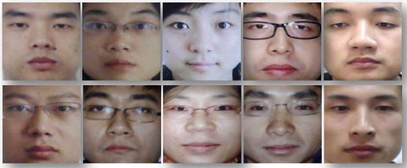
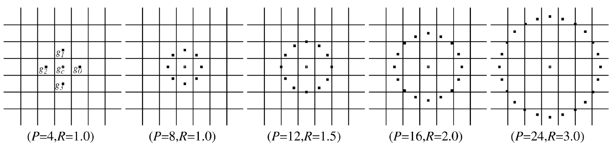
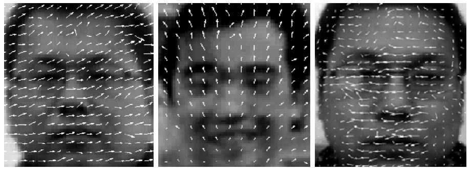
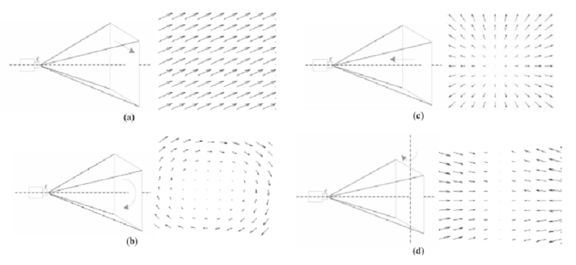
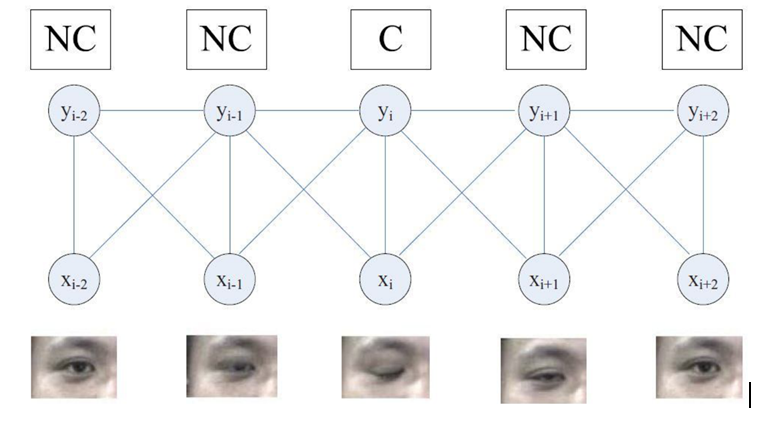

Biometric systems become more and more widespread in recent years.
2D face recognition is not an exception, being one of the most fast growing biometric technologies
for different applications from surveillance to smartphone unlocking. It is not surprising due to minimum
effort that needed from user to use those systems along with the minimum amount of special devices needed.
The main problem with this systems, which is also the main line of attack, is unability
for it to distinguish between the actual face and the image of the face in front of the camera.
As you already guessed, face liveness detection task (also known as face spoofing detection) is to determine whether we have a real face in front of the camera, or its fake copy. The copy being an image of the face printed on the paper or showed on the screen, rubber mask or even a makeup, that was made to make other face look similar. Every serious face recognition system is capable of doing that. But how it classifies between real and fake faces? We would talk about that in the following sections.
Can you guess which photo was taken from a real face and which was taken from another photo? That's the difficult task even for a human. Illustration from [1]. The answer: the rightmost column are the real faces.
All variety of different approaches to the task of face liveness detection can be divided into three folloving categories:
texture analysis, motion analysis and life signs detection.
Texture analysis aims to catch local texture differences between
real and fake faces. It is based on the usage of pixel values in some neighborhoods as they are or in terms of Fourier spectrum.
The usage of Local Binary Pattern or LBP is a popular technique within this kind of approaches. LBP is a powerful texture descriptor, that
encodes any neighborhood of pixel as a binary number.
Motion analysis methods estimate motion field of the demonstrated face: is it similar to the motion field of
a flat piece of paper? The real face have a specific motion field, which is drastically different from a field that is generated by a flat photo.
Life signs analysis is also based on the analysis of video sequence. This category includes a wide variety of
approaches from the eye movement detection to the analysis of lip movement.
The methods that require user unteraction are also fall into this category:
they ask user to perform certain action to prove that the face is real.
Texture analysis is the most popular category of approaches due to the simplicity of implementation and
modest time consumption. This field is based on the improvements of pattern recognition approaches. To further discuss the approaches in
this field, let's look at the concept of LBP.
The approaches of texture analysis assume that input data would have the same size, orientation and intensity properties as the training data.
However, in practice this isn't always true. The most of real world data can have different spatial resolution, can be rotated or have different
lighting conditions. All of this circumstances could lead to degraded performance of face liveness classificator. To address this kind of issues,
T. Ojala et al. applied a concept of Local Binary Patterns in the paper [2]. Basically, LBP assigns a binary number to each
pixel of the image, forming a feature map with unique numbers for different types of textures. Here is how it works.
First of all, we form circle shaped neighborhood as it shown on the image below.

The coordinates of the points are calculated as:
\( (-R sin(\frac{2\pi p}{P}), R cos(\frac{2\pi p}{P})) \)
Then if the value in certain point of this neighborhood is larger than central pixel's value, we place 1 in the corresponding bit. If the value is smaller, we place 0 in that bit. This approach allows us to assign individual number to each pixel, that describes its neighborhood texture and at the same time is invariant to uniform intensity shifts. The formula, describing this process looks like this.\( LBP_{P, R} = \sum_{p=0}^{P-1} \limits s(g_p - g_c)2^p \)
Where \(s\) is the signal function that returns 1 if x is greater or equal to zero and 0 if x is less than zero.The pipeline of the model from [3]
The work of Bao W. et al. [4] was about how to use the information about the motion to tackle
the problem of face liveness detection. Theoretical basis of this paper states that every motion of planar object could be described as
linear combination of translation, rotation, moving forward or backward and swing (perpendicular to the axis of viewing). The point is that
human face is a complex object that is far from being planar. In addition to that, the motion of fourth kind is more valuable - it
is better at discriminaing faces from planar objects.

Motion fields of flat image, curled image and real face
Why did we said that fourth kind of motion is more valuable? Let's look at the motion fields that planar object would produce when being moved in all four ways.  We can see the how face could differ in fourh case right away - it would produce more motion in center, where the nose is and less motion on the sides. The authors decided to use this difference to discriminate between live and fake faces. So their strategy implies deciding whether motion field belongs to a planar object - the image of the face, or a complex object - the face itself.
Life signs are the specific movements that human face makes, for which artificial copies of it are not capable.
It could be eye blinking, mouth movement or head movement for example.
This kind of features are more high-level than
described before. These methods include the ones that require user interaction and the ones that don't.
First kind of methods (that can also be called intrusive) are the ones that ask the users to perform certain actions to prove that they are real.
They provide more accuracy and hence more security, but consume more time and effort from user. Which means that they are suitable for high
security facilities, but wouldn't be so suitable for frequent usage in fields where risk is not so high. Take smartphone unlocking for example.
The next method we describe belongs to the second category. It is based on the detection of blinking [5].
Authors of this work used probabillistic model, which is widespread use in natural language processing,
called conditional random fields or CRF.
This model is frequently used for data sequences and formulates the blinking process as two states - opened and closed.

So the main task for this kind of classification is to precisely detect the blinking, because blinking considered to be the behavior that
photos are not capable. Are they? Well, there exist attacks that are aimed to the kinds of systems that use blinking or mouth movement
in their decision making process. The idea is to use the picture of the face with eyes and mouth cropped out to simulate blinking and
mouth movement with the real eyes and mouth.
ROSE-Youtu Face Liveness Detection Dataset has the images with that kind of attack.
So there exist attacks on this kind of methods, but in combination with texture- or motion-based methods it could be much stronger, albeit slower.
Recent methods in the field of liveness detection (as in every other field in computer vision now) are learning-based.
That means that the algorithms strongly dependent on the data they are trained on.
What datasets are there to train model on? There are several options.
Idiap Replay-Attack Database [6] being the most popular,
this dataset consist of 1300 colored videos of real faces
of different persons and attacks
in the form of printed image or playing video sequence. Embedded laptop 240x320 webcam was used
to capture .mov videos. During the recording two sets of
lighting were used: "controlled lighting conditions" (with office lighting, curtains are down, background is uniform) and "adverse lighting conditions"
(without office lighting, curtains are up, background is complex).
CASIA-FASD (Chinese Academy of Sciences, Institute of Automation Face Anti-spoofing Database)[7].
This dataset consist of real and fake faces of 50 persons. The attacks are performed using warped images and images with eyes cropped out.
The data was captured using 640х480, 480х640 and 1280х720 cameras.
NUAA Photograph Imposter Database (Nanjing University of Aeronautics and Astronautics)[8]
consists of 12000 face photos of 15 different users under different light conditions. It differs from another datasets in the way that it is
free for non-commercial use. The authors provide three versions of this dataset: original images, crops containing only faces, obtained with
face detector and geometrically normalized gray-scale images.
What can we say in conclusion? This post is trying to provide basic understanding of face liveness detection problem and the ways of solving it. What are the main problems that are present in this field? I would consider diverse lighting conditions, image noise of different nature, which is corrupt texture information and the presence of glasses, face masks, etc. These problems require not only the engineer's effort to address them, but also the presence of big and diverse datasets, that should include images not only with diverse light, resolution, skin color of users, user's mimics, but also a set of attacks against face liveness detection system such as cropped out eyes and mouth, rubber masks, high-resolution printed photos, makeup, etc.